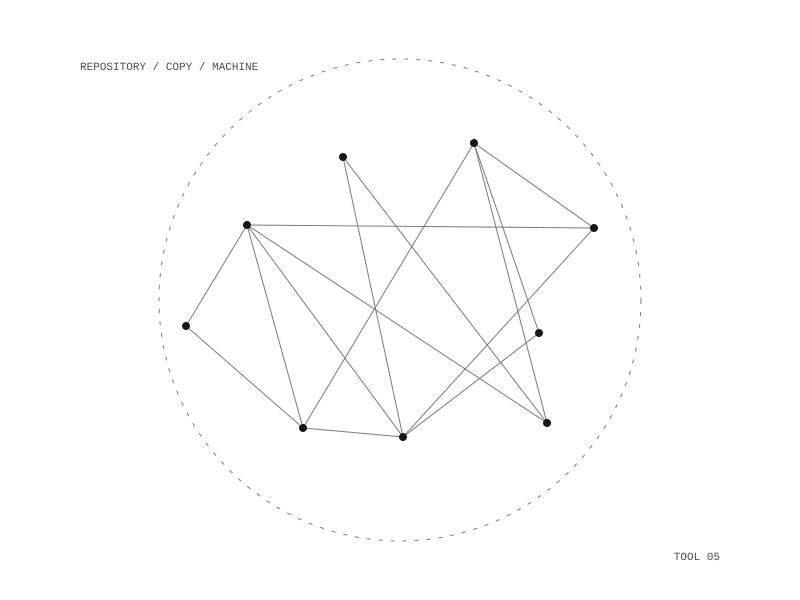

nixos-sync
A shell script that copies git repositories to a NixOS machine over Tailscale, including the files git ignores, so the other machine holds a full working copy rather than just the history. Launchd runs it every five minutes and whenever the network changes.

The queue
Repositories wait in a queue until they have been copied. A commit hook adds a repository when it changes, and each run also scans the working folders and queues any repository whose latest commit moved since the last run, which catches repositories with their own hooks and commits made without hooks. nixos-sync --add DIR queues one folder by hand.
- When the other machine cannot be reached, the script stops and keeps the queue for the next run.
- A repository that fails to copy goes back in the queue.
- The queue is moved aside during a run, so commits made while copying are still queued.
- Only one run happens at a time; a run that starts during another simply leaves the work to the next one.
Where things land
Each repository lands in a code folder in the remote home, at the same path it has under the local home, so two repositories with the same name never collide. Agent worktrees are skipped because their parent repository is copied, and so are temporary repositories outside the home folder. A repository can opt out with git config nixos.sync false. Every copy, and every failure, is written to a log with its time.
every 5 minutes and on network changes, from launchd
bash, rsync over ssh
a NixOS machine reached over Tailscale